전기공사기사 (2014-05-25 기출문제)
1과목: 전기응용 및 공사재료
1. 모노레일 등에 주로 사용되고 있는 전차선로의 가선형태는 무엇인가?
- 제3궤조방식
- 가공복선식
- 가공단선식
- 강체복선식
(정답률: 77%)

2. 유도전동기 제동방법으로 쓰이지 않는 것은?
- 회생제동
- 계자제동
- 역상제동
- 발전제동
(정답률: 90%)
3. 엘리베이터에 사용되는 전동기의 특징이 아닌 것은?
- 가속도의 변화비율이 일정값이 되도록 선택한다.
- 회전부분의 관성 모멘트는 적어야 한다.
- 소음이 적어야 한다.
- 기동 토크가 적어야 한다.
(정답률: 89%)
4. 효율 80%의 전열기로 1kWh의 전기량을 소비하였을 때 10L의 물을 몇 [℃] 올릴 수 있는가?
- 588
- 688
- 58.8
- 68.8
(정답률: 77%)
5. 상전압 200V의 3상 반파정류회로의 각 상에 SCR을 사용하여 위상제어 할 때 제어각이 30° 이면 직류전압은 약 몇 [V]인가?
- 109
- 150
- 203
- 256
(정답률: 63%)
6. 알칼리 축전지에 대한 설명으로 옳은 것은?
- 음극에 Ni산화물, Ag산화물을 사용한다.
- 전해액은 묽은 황산용액을 사용한다.
- 진동에 약하고 급속 충방전이 어렵다.
- 전해액의 농도변화는 거의 없다.
(정답률: 82%)
7. 온도 T[K]의 흑체의 단위표면적으로부터 단위시간에 방사되는 전방사에너지는?
- 그 절대온도에 비례한다.
- 그 절대온도에 반비례한다.
- 그 절대온도의 4승에 비례한다.
- 그 절대온도의 4승에 반비례한다.
(정답률: 84%)
8. 트랜지스터(TR)의 기호에서 이미터의 화살표방향이 나타내는 것은?
- 전압인가의 방향
- 전류의 방향
- 전계의 방향
- 저항의 방향
(정답률: 89%)
9. 완전확산 평판 광원의 최대광도가 I[cd]일 때의 전광속[lm]은? (단, 보통 한 면에서 광속이 나오는 것으로 한다.)
- 2πI
- πI
- 3πI
- 4πI
(정답률: 69%)
10. 염화나트륨의 수용액을 전기분해하여 염소, 수산화나트륨, 수소를 제조하는 것은?
- 전기도금
- 전해정제
- 금속의 전해
- 식염전해
(정답률: 76%)
11. 전선관의 산화방지를 위해 하는 도금은?
- 페인트
- 니켈
- 아연
- 납
(정답률: 85%)
12. 녹 아웃 펀치와 같은 목적으로 사용하는 공구의 명칭은?
- 리이머
- 히키
- 드라이브이트
- 호울 소우
(정답률: 86%)
13. 대전류를 정격 2차 전류 5[A], 1[A], 0.1[A]의 전류로 변환하는 것이며 전류측정, 계전기 동작전원 등의 용도로 사용하는 것은?
- CH
- CCT
- CT
- CC
(정답률: 90%)
14. 금속제 케이블트레이의 종류가 아닌 것은?(관련 규정 개정전 문제로 여기서는 기존 정답인 3번을 누르면 정답 처리됩니다. 자세한 내용은 해설을 참고하세요.)
- 바닥 통풍형
- 바닥 밀폐형
- 익스팬션형
- 사다리형
(정답률: 71%)
15. 애자사용 배선의 절연전선이 조영재를 관통하는 경우 관통부분에 사용할 수 없는 것은?
- 애관
- 금속관
- 합성수지관
- 연질비닐관
(정답률: 63%)
16. 전선관과 박스와의 접속에 사용되는 것은?
- 스트레이트 박스 커넥터
- 스플릿 커플링
- 파이프 클램프
- 컴비네이션 유니온 커플링
(정답률: 78%)
17. 다음 중 방전등의 종류가 아닌 것은?
- 할로겐 램프
- 고압수은 램프
- 메탈할라이드 램프
- 크세논 램프
(정답률: 80%)
18. 22.9[kV-Y]특고압 가공전선로에서 3조를 수평으로 배열하기 위한 완금의 길이[mm]는?
- 2400
- 1800
- 1400
- 900
(정답률: 81%)
19. PF · S형 큐비클식 고압수전 설비에서 고압전로의 단락보호용으로 사용하는 전력퓨즈는?
- 한류형
- 애자형
- 인입형
- 내장형
(정답률: 86%)
20. 송전선로에 사용되는 애자의 불량여부를 검출하는 검출기는 명칭이다. 애자의 전압분포 측정용 기기가 아닌 것은?
- 네온관식
- 스파이크 클립
- 비즈스틱
- 고압메거
(정답률: 72%)
2과목: 전력공학
21. 3상용 차단기의 용량은 그 차단기의 정격전압과 정격차단 전류와의 곱을 몇 배한 것인가?
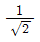
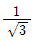
- √2
- √3
(정답률: 29%)
22. ACSR은 동일한 길이에서 동일한 전기저항을 갖는 경동연선에 비하여 어떠한가?
- 바깥지름은 크고 중량은 작다.
- 바깥지름은 작고 중량은 크다.
- 바깥지름과 중량이 모두 크다.
- 바깥지름과 중량이 모두 작다.
(정답률: 26%)
23. 그림과 같은 66 kV 선로의 송전전력이 20000 kW, 역률이 0.8(lag)일 때 a상에 완전 지락사고가 발생하였다. 지락계전기 DG에 흐르는 전류는 약 몇 A 인가? (단, 부하의 정상, 역상임피던스 및 기타 정수는 무시 한다.)
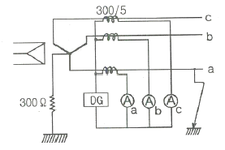
- 2.1
- 2.9
- 3.7
- 5.5
(정답률: 17%)
24. 화력발전소에서 재열기로 가열하는 것은?
- 석탄
- 급수
- 공기
- 증기
(정답률: 29%)
25. 변전소, 발전소 등에 설치하는 피뢰기에 대한 설명 중 틀린 것은?
- 정격전압은 상용주파 정현파 전압의 최고 한도를 규정한 순시값이다.
- 피뢰기의 직렬갭은 일반적으로 저항으로 되어 있다.
- 방전전류는 뇌충격전류의 파고값으로 표시한다.
- 속류란 방전현상이 실질적으로 끝난 후에도 전력계통에서 피뢰기에 공급되어 흐르는 전류를 말한다.
(정답률: 20%)
26. 보일러에서 절탄기의 용도는?
- 증기를 과열한다.
- 공기를 예열한다.
- 보일러 급수를 데운다.
- 석탄을 건조한다.
(정답률: 22%)
27. 전력선과 통신선 사이에 차폐선을 설치하여, 각 선 사이의 상호 임피던스를 각각 Z12, Z1S, Z2S 라 하고 차폐선 자기 임피던스를 ZS 라 할 때, 차폐선을 설치함으로서 유도전압이 줄게 됨을 나타내는 차폐선의 차폐개수는? (단, Z12 는 전력선과 통신선과의 상호임피던스, Z1S 는 전력선과 차폐선과의 상호임피던스, Z2S 는 통신선과 차폐선과의 상호임피던스이다.)
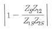
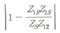
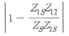
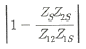
(정답률: 20%)
28. 직류 송전 방식에 관한 설명 중 잘못된 것은?
- 교류보다 실효값이 적어 절연계급을 낮출 수 있다.
- 교류방식보다는 안정도가 떨어진다.
- 직류계통과 연계시 교류계통의 차단용량이 작아진다.
- 교류방식처럼 승전손실이 없어 송전효율이 좋아진다.
(정답률: 22%)
29. 전력설비의 수용률을 나타낸 것으로 옳은 것은?
- 수용률 =

- 수용률 =

- 수용률 =

- 수용률 =

(정답률: 22%)
30. 정격전압 6600 V, Y결선, 3상 발전기의 중성점을 1선 지락 시 지락전류를 100 A 로 제한하는 저항기로 접지하려고 한다. 저항기의 저항 값은 약 몇 Ω 인가?
- 44
- 41
- 38
- 35
(정답률: 26%)
31. 변전소에서 지락사고의 경우 사용되는 계전기에 영상전류를 공급하기 위하여 설치하는 것은?
- PT
- ZCT
- GPT
- CT
(정답률: 30%)
32. 송 · 배전 계통에서의 안정도 향상 대책이 아닌 것은?
- 병렬 회선수 증가
- 병렬 콘덴서 설치
- 속응여자방식 채용
- 기기의 리액턴스 감소
(정답률: 20%)
33. 다중접지 3상 4선식 배전선로에서 고압측(1차측) 중성선과 저압측(2차측) 중성선을 전기적으로 연결하는 목적은?
- 저압측의 단락사고를 검출하기 위하여
- 저압측의 지락사고를 검출하기 위하여
- 주상변압기의 중성선측 부싱을 생략하기 위하여
- 고저압 혼촉시 수용가에 침입하는 상승전압을 억제하기 위하여
(정답률: 28%)
34. 전력용 콘덴서와 비교할 때 동기조상기의 특징에 해당되는 것은?
- 전력손실이 적다.
- 진상전류 이외에 지상전류도 취할 수 있다.
- 단락고장이 발생하여도 고장전류를 공급하지 않는다.
- 필요에 따라 용량을 계단적으로 변경할 수 있다.
(정답률: 26%)
35. 파동 임피던스가 300 Ω인 가공 송전선 1 km 당의 인덕턴스(mH/km)는? (단, 저항과 누설컨덕턴스는 무시한다.)
- 1.0
- 1.2
- 1.5
- 1.8
(정답률: 16%)
36. 전력계통 설비인 차단기와 단로기는 전기적 및 기계적으로 인터록을 설치하여 연계하여 운전하고 있다. 인터록(interlock)의 설명으로 알맞은 것은?
- 부하 통전시 단로기를 열 수 있다.
- 차단기가 열려 있어야 단로기를 닫을 수 있다.
- 차단기가 닫혀 있어야 단로기를 열 수 있다.
- 부하 투입 시에는 차단기를 우선 투입한 후 단로기를 투입한다.
(정답률: 28%)
37. 그림과 같이 각 도체와 연피간의 정전용량이 Co, 각 도체간의 정전용량이 Cm인 3심 케이블의 도체 1조당의 작용 정전용량은?
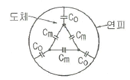
- Co+Cm
- 3Co+3Cm
- 3Co+Cm
- Co+3Cm
(정답률: 26%)
38. 지락 고장 시 문제가 되는 유동장해로서 전력선과 통신선의 상호 인덕턴스에 의해 발생하는 장해 현상은?
- 정전유도
- 전자유도
- 고조파유도
- 전파유도
(정답률: 25%)
39. 한류리액터를 사용하는 가장 큰 목적은?
- 충전전류의 제한
- 접지전류의 제한
- 누설전류의 제한
- 단락전류의 제한
(정답률: 30%)
40. 가공전선로에 사용되는 전선의 구비조건으로 틀린 것은?
- 도전율이 높아야 한다.
- 기계적 강도가 커야 한다.
- 전압강하가 적어야 한다.
- 허용전류가 적어야 한다.
(정답률: 30%)
3과목: 전기기기
41. 1차 전압 6000[V], 권수비 20인 단상 변압기로 전등부하에 10[A]를 공급할 때의 압력[kW]은? (단, 변압기의 손실은 무시한다.)
- 2
- 3
- 4
- 5
(정답률: 28%)
42. 그림과 같은 단상브리지 정류회로(혼합브리지)에서 직류 평균전압[V]은? (단, E는 교류측 실효치전압, α는 점호제어각이다.)
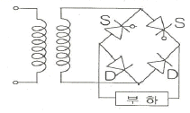
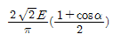
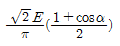
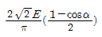
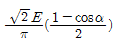
(정답률: 20%)
43. 직류 직권전동기가 있다. 공급 전압이 100[V], 전기자 전류가 4[A]일 때 회전속도는 1500[rpm]이다. 여기서 공급 전압을 80[V]로 낮추었을 때 같은 전기자전류에 대하여 회전속도는 얼마로 되는가? (단, 전기자 권선 및 계자 권선의 전저항은 0.5[Ω]이다.)
- 986
- 1042
- 1125
- 1194
(정답률: 19%)
44. 부하의 역률이 0.6일 때 전압 변동률이 최대로 되는 변압기가 있다. 역률 1.0일 때의 전압 변동률이 3[%]라고 하면 역률 0.8에서의 전압 변동률은 몇 [%]인가?
- 4.4
- 4.6
- 4.8
- 5.0
(정답률: 20%)
45. 정격출력 5[kW], 정격전압 100[V]의 직류 분권전동기를 전기동력계로 사용하여 시험하였더니 전기동력계의 저울이 5[kg]을 나타내었다. 이때 전동기의 출력[kW]은 약 얼마인가? (단, 동려계의 암(arm) 길이는 0.6[m], 전동기의 회전수는 1500[rpm]으로 한다.
- 3.69
- 3.81
- 4.62
- 4.87
(정답률: 15%)
46. 1차 전압 V1, 2차 전압 V2인 단권변압기를 Y결선했을 때, 등가용량과 부하용량의 비는? (단, V1
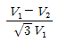
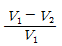
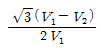
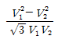
(정답률: 20%)
47. 병렬 운전 중의 A, B 두 동기발전기 중에서 A 발전기의 여자를 B 발전기보다 강하게 하였을 경우 B기 발전기는?
- 90° 앞선 전류가 흐른다.
- 90° 뒤진 전류가 흐른다.
- 동기화 전류가 흐른다.
- 부하 전류가 증가한다.
(정답률: 18%)
48. 수백[Hz]~20000[Hz]정도의 고주파 발전기에 쓰이는 회전 자형은?
- 농형
- 유도자형
- 회전전기자형
- 회전계자형
(정답률: 25%)
49. 동기전동기의 위상특성곡선(V곡선)에 대한 설명으로 옳은 것은?(오류 신고가 접수된 문제입니다. 반드시 정답과 해설을 확인하시기 바랍니다.)
- 공급전압 V와 부하가 일정할 때 계자전류의 변화에 대한 전기자 전류의 변화를 나타낸 곡선
- 출력을 일정하게 유지할 때 계자전류와 전기자 전류의 관계
- 계자전류를 일정하게 유지할 때 전기자와 출력사이의 관계
- 역률을 일정하게 유지할 때 계자전류와 전기자 전류의 관계
(정답률: 17%)
50. 단상 직권 정류자 전동기에서 주자속의 최대치를 øm, 자극수를 P, 전기자 병렬 회로수를 a, 전기자 전 도체수를Z, 전기자의 속도를 N[rpm]이라 하면 속도 기전력의 실효값 Er[V]은? (단, 주자속은 정현파이다.)
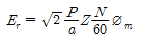
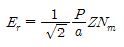
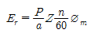
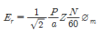
(정답률: 24%)
51. 직류기의 정류작용에 관한 설명으로 틀린 것은?
- 리액턴스 전압을 상쇄시키기 위해 보극을 둔다.
- 정류작용은 직선정류가 되도록 한다.
- 보상권선은 정류작용에 큰 도움이 된다.
- 보상권선이 있으면 보극은 필요 없다.
(정답률: 25%)
52. 어느 변압기의 무유도 전부하의 효율이 96[%], 그 전압변동률은 3[%]이다. 이 변압기의 최대효율[%]은?
- 약 96.3
- 약 97.1
- 약 98.4
- 약 99.2
(정답률: 16%)
53. 동기전동기의 위상특성곡선을 나타낸 것은? (단, P를 출력, lf를 계자전류, la를 전기자전류, cosø를 역률로 한다.)
- lf - la 곡선, p는 일정
- p - la 곡선, lf는 일정
- p - lf 곡선, la는 일정
- lf - la 곡선, cosø는 일정
(정답률: 26%)
54. 3상 유도전동기에서 회전자사 슬립 s로 회전하고 있을 때 2차 유기전압 E2s 및 2차 주파수 f2s와 s와의 관계는? (단, E2 는 회전자가 정지하고 있을 때 2차 유기기전력이며 f1은 1차 주파수이다.)
- E2s=sE2, f2s=sf1
- E2s=sE2, f2s=f1/s
- E2s=E2/s, f2s=f1/s
- E2s=(1-s)E2, f2s=(1-s)f1
(정답률: 25%)
55. 단상 유도전압조정기의 2차 전압이 100±30[V]이고, 직렬 권선의 전류가 6[A]인 경우 정격용량은 몇 [VA] 인가?
- 780
- 420
- 312
- 180
(정답률: 17%)
56. 유도전동기에 게르게스(Gorges)현상이 생기지 슬립은 대략 얼마인가?
- 0.25
- 0.50
- 0.70
- 0.80
(정답률: 24%)
57. 교류 타코미터(AC tacnometer)의 제어 권선전압 e(t)와 회전각 θ의 관계는?
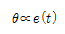
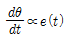
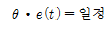
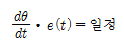
(정답률: 20%)
58. 600[rpm]으로 회전하는 타여자 발전기가 있다. 이 때 유기기전력은 150[V], 여자전류는 5[A]이다. 이 발전기를 800[rpm]으로 회전하여 180[V]의 유기기전력을 얻으려면 여자전류는 몇 [A]로 하여야 하는가? (단, 자기회로의 포화현상은 무시한다.)
- 3.2
- 3.7
- 4.5
- 5.2
(정답률: 13%)
59. 유도전동기의 동작원리로 옳은 것은?
- 전자유도와 플레밍의 왼손법칙
- 전자유도와 플레밍의 오른손 법칙
- 정전유도와 플레밍의 왼손법칙
- 정전유도와 플레밍의 오른손 법칙
(정답률: 21%)
60. 변압기의 결선방식에 대한 설명으로 틀린 것은?
- △-△결선에서 1상분의 고장이 나면 나머지 2대로써 V결선 운전이 가능하다.
- Y-Y결선에서 1차, 2차 모두 중성점을 접지할 수 있으며, 고압의 경우 이상전압을 감소시킬 수 있다.
- Y-Y결선에서 중성점을 접지하면 제5고조파 전류가 흘러 통신선에 유동장해를 일으킨다.
- Y-△결선에서 1상에 고장이 생기면 전원공급이 불가능해진다.
(정답률: 21%)
4과목: 회로이론 및 제어공학
61. 직렬로 유도 결합된 회로이다. 단자 a-b에서 본 등가임피던스 Zab 를 나타낸 식은?
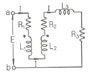
- R1+R2+R3+jw(L1+L2-2M)
- R1+R2+jw(L1+L2+2M)
- R1+R2+R3+jw(L1+L2+L3+2M)
- R1+R2+R3+jw(L1+L2+L3-2M)
(정답률: 23%)
62. 4단자 정수 A, B, C, D 로 출력측을 개방시켰을 때 입력측에서 본 구동점 임피던스
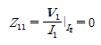
를 표시한 것 중 옳은 것은?- Z11 = A/C
- Z11 = B/D
- Z11 = B/A
- Z11 = B/C
(정답률: 21%)
63. RC 저역 여파기 회로의 전달함수 G(jw)에서 W=1/RC 경우 ｜G(jw)｜의 값은?
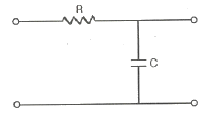
- 1
- 1/√2
- 1/√3
- 1/2
(정답률: 23%)
64. 다음 회로에서 전압 V 를 가하니 20 A의 전류가 흘렀다고 한다. 이 회로의 역률은?
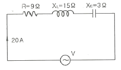
- 0.8
- 0.6
- 1.0
- 0.9
(정답률: 20%)
65. 대칭 좌표법에서 대칭분을 각 상전압으로 표시한 것 중 틀린 것은?
- E0=1/3(Ea+Eb+Ec)
- E1=1/3(Ea+aEb+a2Ec)
- E2=1/3(Ea+a2Eb+aEc)
- E3=1/3(E2a+E2b+E2c)
(정답률: 28%)
66. 그림과 같은 π형 4단자 회로의 어드미턴스 파라미터 Y22 는?
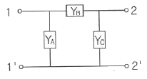
- Y22=YA+YC
- Y22=YB
- Y22=YA
- Y22=YB+YC
(정답률: 22%)
67.
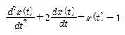
에서 x(t)는 얼마인가? (단, x(0)=x′(0)=0 이다.)- te-t-et
- t-t+e-t
- 1-te-t-e-t
- 1+te-t+e-t
(정답률: 18%)
68. 분포정수회로에 직류를 흘릴 때 특성 임피던스는? (단, 단위 길이당의 직렬 임피던스 Z=R+jwL (Ω), 병렬 어드미턴스 Y=G+jwC (℧) 이다.)
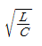
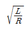
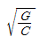
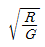
(정답률: 17%)
69. cost · sint 의 라플라스 변환은?(문제 오류로 전항 정답 처리된 문제입니다. 여기서는 가답안인 1번을 누르면 정답 처리 됩니다.)
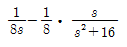
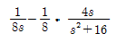
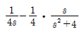
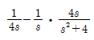
(정답률: 18%)
70. 다음 왜형파 전류의 왜형률은 약 얼마인가?
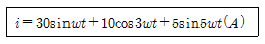
- 0.46
- 0.26
- 0.53
- 0.37
(정답률: 19%)
71. 근궤적이 S평면의 jw축과 교차할 때 폐루프의 제어계는?
- 안정하다.
- 불안정하다.
- 임계상태이다.
- 알수 없다.
(정답률: 23%)
72. 다음 제어량 중에서 추종제어와 관계없는 것은?
- 위치
- 방위
- 유량
- 자세
(정답률: 24%)
73.
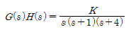
의 K≥0 에서의 분지점(break away point)은?- -2.867
- 2.867
- -0.467
- 0.467
(정답률: 16%)
74. 그림의 회로와 동일한 논리 소자는?
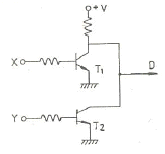
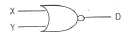
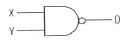
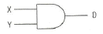
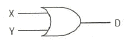
(정답률: 18%)
75. 그림과 같은 RLC 회로에서 입력전압 ei(t), 출력 전류가 i(t)인 경우 이 회로의 전달함수 I(s)/Ei(s)는? (단, 모든 초기조건은 0 이다.)
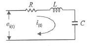
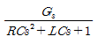
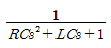
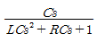
(정답률: 18%)
76. 아래의 신호흐름선도의 이득 Y6/Y1의 분자에 해당하는 값은?
- G1G2G3G4+G4G5
- G1G2G3G4+G4G5+G2H1
- G1G2G3G4H3+G2H1+G4H2
- G1G2G3G4+G4G5+G2G4G5H1
(정답률: 16%)
77. 2차 제어계에서 공진주파수(wm)와 고유주파수(wn), 감쇠비(α)사이의 관계로 옳은 것은?
(정답률: 17%)
78. 보드선도상의 안정조건을 옳게 나타낸 것은? (단, gm 은 이득여유, Φm 은 위상여유)
- gm >0, Φm >0
- gm <0, Φm <0
- gm <0, Φm >0
- gm >0, Φm <0
(정답률: 22%)
79. 다음의 미분방정식으로 표시되는 시스템의 계수 행령 A는 어떻게 표시되는가?
(정답률: 22%)
80. 그림과 같은 RC회로에서 RC≪1 인 경우 어떤 요소의 회로인가?
- 비례요소
- 미분요소
- 적분요소
- 2차 지연요소
(정답률: 23%)
5과목: 전기설비기술기준 및 판단기준
81. 특고압 가공전선로에 사용하는 철탑 중에서 전선로의 지지물 양쪽의 경간의 차가 큰 곳에 사용하는 철탑의 종류는?
- 각도형
- 인류형
- 보강형
- 내장형
(정답률: 28%)
82. 합성수지몰드공사에 의한 저압 옥내배선의 시설방법으로 옳지 않은 것은?
- 합성수지몰드는 홈의 폭 및 깊이가 3.5㎝ 이하의 것 이어야 한다.
- 전선은 옥외용 비닐절연선을 제외한 절연전선이어야 한다.
- 합성수지몰드 상호간 및 합성수지몰드와 박스 기타의 부속품과는 전선이 노출되지 않도록 접속한다.
- 합성수지모드 안에는 접속점을 1개소까지 허용한다.
(정답률: 24%)
83. 전력보안 통신용 전화설비의 시설장소로 틀린 것은?
- 동일 수계에 속하고 보안상 긴급연락의 필요가 있는 수력발전소 상호간
- 동일 전력계통에 속하고 보안상 긴급연락의 필요가 있는 발전소 및 개폐소 상호간
- 2 이상의 급전소 상호간과 이들을 총합 운용하는 급전소간
- 원격감시제어가 되지 않는 발전소와 변전소간
(정답률: 18%)
84. 교량 위에 시설하는 조명용 가공전선로에 사용되는 경동선의 최소 굵기는 몇 mm 인가?
- 1.6
- 2.0
- 2.6
- 3.2
(정답률: 24%)
85. 다음 중 국내의 전압 종별이 아닌 것은?
- 저압
- 고압
- 특고압
- 초고압
(정답률: 30%)
86. 의료장소의 안전을 위한 의료용 절연변압기에 대한 다음 설명 중 옳은 것은?
- 2차측 정격전압은 교류 300V 이하이다.
- 2차측 정격전압은 직류 250V 이하이다.
- 정격출력은 5kVA 이하이다.
- 정격출력은 10kVA 이하이다.
(정답률: 18%)
87. 제1종 접지공사의 접지선에 대한 설명으로 옳은 것은?(오류 신고가 접수된 문제입니다. 반드시 정답과 해설을 확인하시기 바랍니다.)
- 고장시 흐르는 전류를 안전하게 통할 수 있는 것을 사용하여야 한다.
- 연동선만을 사용하여야 한다.
- 피뢰기의 접지선으로는 캡타이어케이블을 사용한다.
- 접지선의 단면적은 16mm2이상이어야 한다.
(정답률: 22%)
88. 사용전압이 35000V 이하인 특고압 가공전선과 가공약전ㄹ전선을 동일 지지물에 시설하는 경우 특고압 가공전선로의 보안공사로 적합한 것은?
- 고압 보안공사
- 제1종 특고압 보안공사
- 제2종 특고압 보안공사
- 제3종 특고압 보안공사
(정답률: 20%)
89. 특고압 가공전선로의 전선으로 케이블을 사용하는 경우의 시설로서 옳지 않는 것은?(관련 규정 개정전 문제로 여기서는 기존 정답인 2번을 누르면 정답 처리됩니다. 자세한 내용은 해설을 참고하세요.)
- 케이블은 조가용선에 행거에 의하여 시설한다.
- 케이블은 조가용선에 접초시키고 비닐테이프 등을 30㎝이상의 간격으로 감아 붙인다.
- 조가용선은 단면적 22mm2의 아연도강연선 또는 인장강도 13.93kN 이상의 연선을 사용한다.
- 조가용선 및 케이블의 피복에 사용하는 금속체에는 제3종 접지공사를 한다.
(정답률: 22%)
90. 고압 옥내배선을 할 수 있는 공사 방법은?
- 합성수지관공사
- 금속관공사
- 금속몰드공사
- 케이블공사
(정답률: 25%)
91. 가공 전선로의 지지물에 하중이 가하여지는 경우에 그 하중을 받는 지지물의 기초 안전율은 얼마 이상이어야 하는가? (단, 이상 시 상정하중은 무관)
- 1.5
- 2.0
- 2.5
- 3.0
(정답률: 23%)
92. 전극식 온천용 승온기 시설에서 적합하지 않은 것은?(오류 신고가 접수된 문제입니다. 반드시 정답과 해설을 확인하시기 바랍니다.)
- 승온기의 사용전압은 400V 미만일 것
- 전동기 전원공급용 변압기는 300V 미만의 절연변압기를 사용할 것
- 절연변압기 외함에는 제3종 접지공사를 할 것
- 승온기 및 차폐장치의 외함은 절연성 및 내수성이있는 견고한 것일 것
(정답률: 20%)
93. 전기부식방지시설에서 전원장치를 사용하는 경우 적합한 것은?
- 전기부식방지회로의 사용전압은 교류 60V 이하일 것
- 지중에 매설하는 양극(+)의 매설깊이는 50㎝ 이상일 것
- 수중에 시설하는 양극(+)과 그 주위 1m이내의 전위차는 10V를 넘지 말 것
- 지표 또는 수중에서 1m 간격의 임의의 2점간의 전위차는 7V를 넘지 말 것
(정답률: 15%)
94. 금속제 외함을 갖는 저압의 기계기구로서 사람이 쉽게 접촉되어 위험의 우려가 있는 곳에 시설하는 전로에 지락이 생겼을 때 자동적으로 전로를 차단하는 장치를 설치하여야 한다. 사용전압은 몇 V 인가?(관련 규정 개정전 문제로 여기서는 기존 정답인 2번을 누르면 정답 처리됩니다. 자세한 내용은 해설을 참고하세요.)
- 30
- 60
- 100
- 150
(정답률: 20%)
95. 사용 전압이 400V 미만이고 옥내 배선을 시공한 후 점검할 수 없는 은폐 장소이며, 건조된 장소일 때 공사 방법으로 가장 옳은 것은?(오류 신고가 접수된 문제입니다. 반드시 정답과 해설을 확인하시기 바랍니다.)
- 플로어 덕트 공사
- 버스 덕트 공사
- 합성수지 몰드 공사
- 금속 덕트 공사
(정답률: 19%)
96. 다음（ ) 안에 들어갈 내용으로 알맞은 것은?
- 정격전류
- 단락전류
- 과부하전류
- 최대사용전류
(정답률: 26%)
97. 발전소 · 변전소를 산지에 시설할 경우 절토면 최하단부에서 발전 및 변전설비까지 최소 이격거리는 보안울타리, 외곽도로, 수림대를 포함하여 몇 m 이상 되어야 하는가?
- 3
- 4
- 5
- 6
(정답률: 15%)
98. 345kV의 가공전선과 154kV 가공전선과의 이격거리는 최소 몇 m 이상이어야 하는가?
- 4.4
- 5
- 5.48
- 6
(정답률: 18%)
99. 일반 주택의 저압 옥내배선을 점검한 결과 시공이 잘못 된 것은?
- 욕실의 전등으로 방습형 형광등이 시설되어 있다.
- 단상 3선식 인입개폐기의 중성선에 동판이 접속되어있다.
- 합성수지관의 지지점간의 거리가 2m로 되어 있다.
- 금속관 공사로 시공된 곳에는 HIV전선이 사용되었다.
(정답률: 22%)
100. 22900/220V, 30kVA 변압기로 단상 2선식으로 공급되는 옥내배선에서 절연부분의 전선에서 대지로 누설하는 전류의 최대한도는?
- 약 75mA
- 약 68mA
- 약 3mA
- 약 136mA
(정답률: 12%)